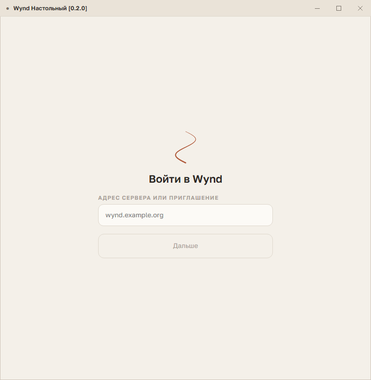
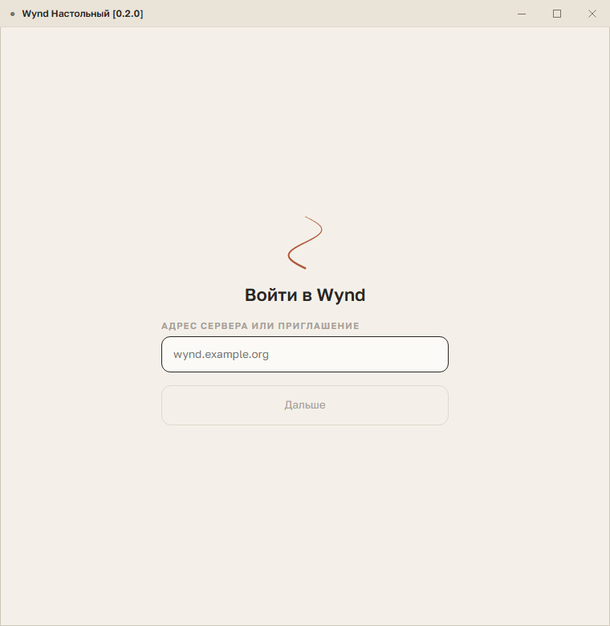

Поле ввода — акцентная рамка на всех экранах
Настоящий рендер окна Настольного: исходник cmd/wynd-desktop/frontend, vite 5179,
mock без сервера, ?update=none; headless Edge, 760 × 780 CSS px, DPR 1, светлая
тема. Оба кадра сняты с одного дерева: у «до» у поля адреса временно убран active.
Фон поля в обоих — #fcfaf6 на бумаге #f4f0e9; отличается только
рамка 1 px.
До — мягкая рамка --line

После — акцентная рамка --c

Вёрстка ждёт приёмки владельца. Правило и разбор — C142, план 46.